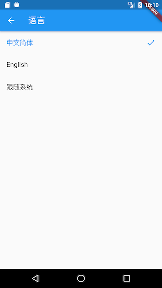

15.8 多语言和多主题¶
本实例APP中语言和主题都是可以设置的，而两者都是通过ChangeNotifierProvider来实现的：我们在main函数中使用了Consumer2，依赖了ThemeModel和LocaleModel，因此，当我们在语言和主题设置页更该当前的配置后，Consumer2的builder都会重新执行，构建一个新的MaterialApp，所以修改会立即生效。下面看一下语言和主题设置页的实现。
15.8.1 语言选择页¶
APP语言选择页提供三个选项：中文简体、美国英语、跟随系统。我们将当前APP使用的语言高亮显示，并且在后面添加一个“对号”图标，实现如下：
class LanguageRoute extends StatelessWidget {
@override
Widget build(BuildContext context) {
var color = Theme.of(context).primaryColor;
var localeModel = Provider.of<LocaleModel>(context);
var gm = GmLocalizations.of(context);
//构建语言选择项
Widget _buildLanguageItem(String lan, value) {
return ListTile(
title: Text(
lan,
// 对APP当前语言进行高亮显示
style: TextStyle(color: localeModel.locale == value ? color : null),
),
trailing:
localeModel.locale == value ? Icon(Icons.done, color: color) : null,
onTap: () {
// 更新locale后MaterialApp会重新build
localeModel.locale = value;
},
);
}
return Scaffold(
appBar: AppBar(
title: Text(gm.language),
),
body: ListView(
children: <Widget>[
_buildLanguageItem("中文简体", "zh_CN"),
_buildLanguageItem("English", "en_US"),
_buildLanguageItem(gm.auto, null),
],
),
);
}
}
上面代码逻辑很简单，唯一需要注意的是我们在build(…)方法里面定义了_buildLanguageItem(…)方法，它和在LanguageRoute类中定义该方法的区别就在于：在build(…)内定义的方法可以共享build(...)方法上下文中的变量，本例中是共享了localeModel。当然，如果_buildLanguageItem(…)的实现复杂一些的话不建议这样做，此时最好是将其作为LanguageRoute类的方法。该页面运行效果如图15-6、15-7所示：

切换语言后立即生效。
15.8.2 主题选择页¶
一个完整的主题Theme包括很多选项，这些选项在ThemeData中定义。本实例为了简单起见，我们只配置主题颜色。我们提供几种默认预定义的主题色供用户选择，用户点击一种色块后则更新主题。主题选择页的实现代码如下：
class ThemeChangeRoute extends StatelessWidget{
@override
Widget build(BuildContext context) {
return Scaffold(
appBar: AppBar(
title: Text(GmLocalizations.of(context).theme),
),
body: ListView( //显示主题色块
children: Global.themes.map<Widget>((e) {
return GestureDetector(
child: Padding(
padding: const EdgeInsets.symmetric(vertical: 5, horizontal: 16),
child: Container(
color: e,
height: 40,
),
),
onTap: () {
//主题更新后，MaterialApp会重新build
Provider.of<ThemeModel>(context).theme = e;
},
);
}).toList(),
),
);
}
}
运行效果如图15-8所示：

点击其它主题色块后，APP主题色立马切换生效。